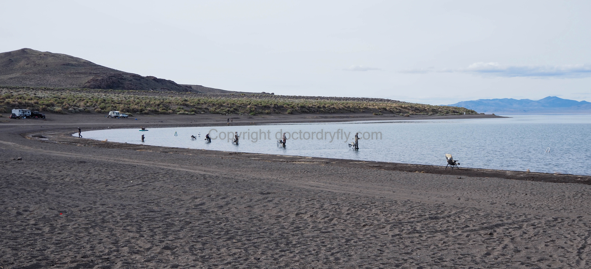

Pyramid Lake
I was skeptical about Pyramid Lake, Nevada when I first received an invitation to fish it in April 2023. I hate fishing stillwater, and giant lakes don’t seem to present much of a thrill. In my opinion, there’s no strategy, no problem-solving, and no thinking involved. You throw your line in at a seemingly random spot on the shore and hope for the best. I also, admittedly, know very little about catching large fish using a rod bigger than a four or five weight. My friend who invited me promised a quick casting demonstration for his two-handed seven weight and that he’d take care of the necessary flies. The chance to catch very, very large cutthroat was enticing. I don’t believe I’ve ever caught a trout over 20 inches, and I think most casual anglers who claim to have done so are rounding up from 17 or 18.
LOL, well the joke was on me. Despite recent online reports promising hot fishing, we caught exactly one cutthroat between the two of us, for an average catch rate of .25 fish per person per day. You can guess which one of us caught the one trout (hint: it wasn’t me). The poor fishing continued a string of bad luck. My last attempt to fish ended in failure as the water in Patagonia Chile was completely blown out. I did foul-hook one of the sucker fish that also live in the lake so it wasn’t a total shut-out, though I don’t really count non-game, foul hooked fish. The camping experience and scenery were better than I expected, the fishing much, much worse. It happens.
Logistics
Camping and fishing at Pyramid Lake requires two special permits. Because the lake is on the Pauite Indian Reservation a regular Nevada fishing license is not useful. Instead, a special fishing license, which is $24 a day (as of 2023), is required. In addition, one must purchase a camping permit at $32 a day. Two days at Pyramid Lake, even with just a tent and a few hot dogs, is not cheap.
The vast majority of visitors will come from the Reno area, driving north on the 445 to Sutcliffe, Nevada, Here you can buy both your camping and fishing permits from the ranger station, though both can also be purchased online as well. We bought camping permits online and fishing permits in person, partially to have an excuse to go into the ranger station and ask about fishing reports and camping possibilities. The woman who sold us the fishing permits mentioned something about needing to have a paper copy of the fishing permits on hand, but it wasn’t 100% clear to me that she meant a copy on your phone wasn’t sufficient. Buying your fishing permit in person, where they print it off for you, was easy enough, though when we showed up, there was no one at the counter and we had to wait about 20 minutes along with some other would-be anglers. There are basically no signs directing visitors to the ranger station where one can buy licenses, but it is on Lakeview Drive in Sutcliffe, next to the Pyramid Lake Marina.
The 445 continues north along the lake shore and passes various places to camp. The first two obvious spots are Pelican Bay and Windless Bay. The ranger station has paper maps that are borderline useless, but they do list various beaches and camping spots, though there are no mileage markers or other information that identifies where one is on the map. We were told by the woman who sold us the licenses that, “you can camp anywhere you can fish, just 100 yards from the water’s edge.”
Windless and Pelican Bays
Pelican Bay and Windless Bay both have a Florida Gulf Coast beach vibe to them. The locals park their RVs in circles or lines, hang out in beach chairs, and wander out to their ladders when the mood strikes. The scene was country music (though one RV played Steve Goodman’s Go Cubs Go twice!), beer, and American flags, along with lots of people not catching fish. I heard it can get pretty rowdy at night, but everyone was very friendly when we showed up to squeeze our ladders in. The guys fishing next to us were happy to exchange tips and fishing reports. It’s just not the place for those seeking solitude. My impression is Pelican Bay is fairly similar though we didn’t fish there. If anything, it looked more crowded than Windless.
The Windless Bay RV scene. The empty ladders on left are a good indication of the quality of the fishing that day.
Yes You Need a Ladder
Ah yes, the requisite ladders! If you’re reading this, you probably don’t have a custom-made chair ladder and that’s okay. Regular house ladders are absolutely essential and necessary, however, and the bigger the better. I had a standard six foot house ladder and my friend had a smaller stepstool. The stepstool was not as useful. The ladder serves a few purposes. Most obviously, it gives you between 10 and 20 additional feet out into the water. The idea, as far as I understand it (keeping in mind I didn’t catch any fish), is to cast to the edge of the drop-off, where the water becomes much deeper. Apparently the trout cruise the area at the edge of the shelf and the drop-off, and the ladder makes it possible to cast from the water much closer to the drop-off. The ladder also gets one’s body out of the cold water, making it easier to stay in the lake longer. I was worried I’d get extremely uncomfortable having to stand on a ladder for long periods of time, but it wasn’t really that bad. I got used to sort of bracing myself against the top steps, taking some weight off my feet and reducing the stiffness that comes from standing on your feet without moving. Depending on the location we were fishing, the bottom was sandy or slightly rocky, but in either case it wasn’t too difficult to find a place to setup the ladder. The stepstool seemed to sink into the sand a little bit more and overall just wasn’t as stable in the water. Because it was much shorter, it wasn’t as easy to lean against when casting as the taller ladder, which actually made it more uncomfortable to fish from (as well as being colder).
 Most of these are custom chair ladders. Exactly one of these people caught one fish in the two hours or so I was fishing at Windless.
Other Camping Options
We continued north on the 445 and the farther up the coast one goes, the thinner the crowd gets. There are turnouts and networks of dirt roads with obvious camping sites and it’s pretty straightforward to drive along and pull over at a place that looks promising. We turned off the road at Warrior Point, which is labeled with a sign and has pit toilets, some small shelters, picnic tables, and established fire pits at many of the sites. Fires are allowed in these unofficial pits and we had a nice camping experience with solitude, good weather and pleasant scenery. The colors of the bright blue lake, brown mountains, snow-capped peaks, and white clouds were really striking at times. Be aware there are no trees anywhere, so I could imagine it getting very hot later in the season.
Dusk from our campsite.
There are also a few rock outcroppings at Warrior Point (and other points along the coast) that seem to drop directly into deeper water, so ladders are not necessary in these spots. If one didn’t have a ladder, these are good options for places to fish, though only being able to fish the rocks will still be somewhat limiting. I have no idea if the fishing is good off these points, though they seemed to be quite popular fishing spots.
The lake was glassy both days we were there with almost no wind. Of course, this is what the locals chose to blame the bad fishing on (“weather is too good”). We stripped foam beetles, wooly buggers, and other typical Pyramid flies, and dropped chironomids beneath bobbers. We could see the native sucker fish and the occasional trout swimming around in the shallows, and the few fish stories we heard suggested the fish were very close to the ladders, not out at the drop-off. We also saw a number of fish come to the surface 100 to 200 yards past where we could cast. In desperation, we tied on dry flies at one point and tried to cast out closer to those fish. No dice, it just wasn’t happening for us. I wouldn’t mind returning to Pyramid Lake, in spite of my bias against stillwater fishing, but it won’t be in 2023.